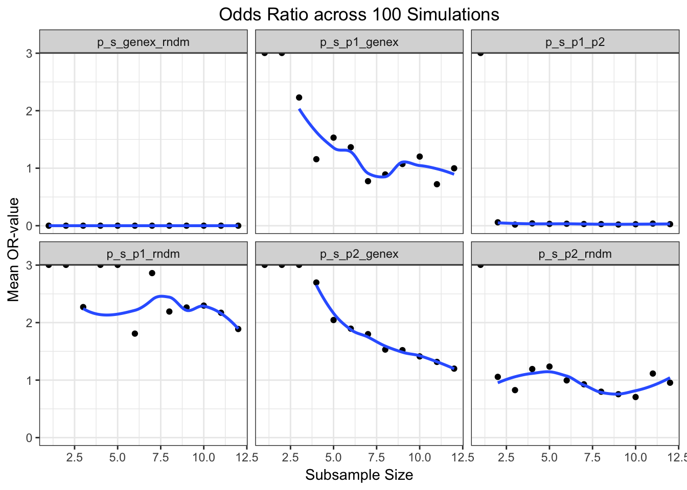
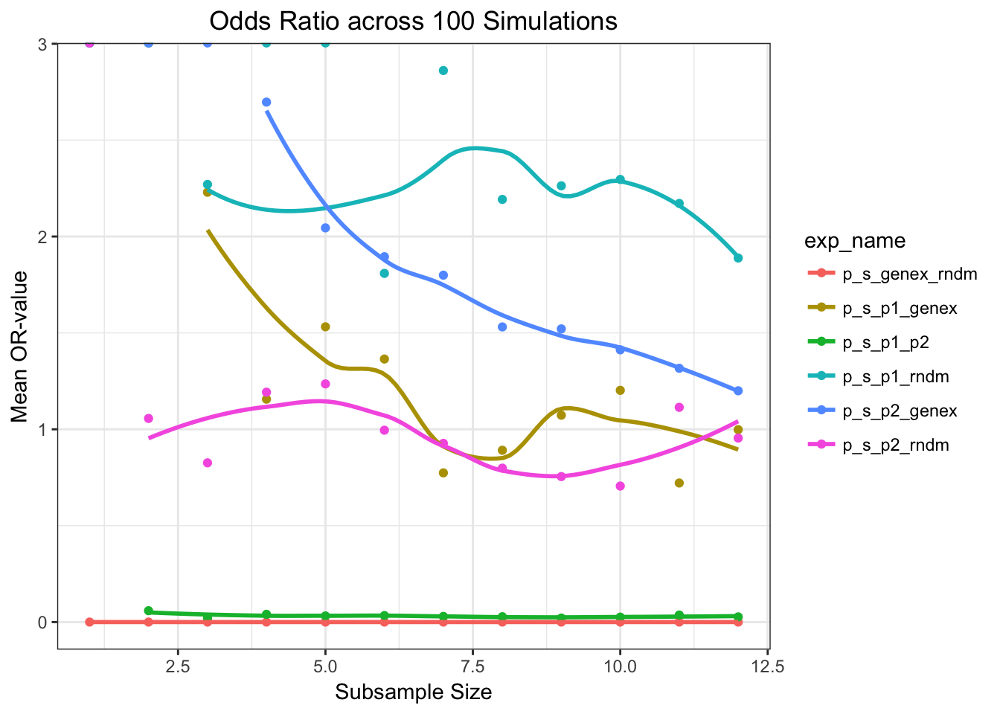
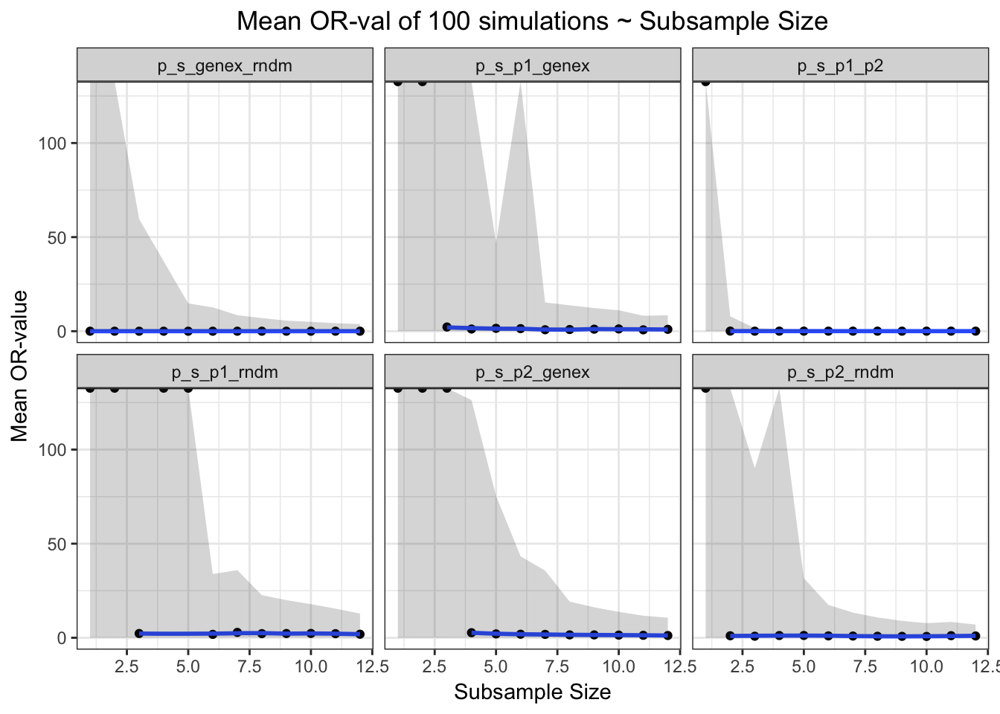
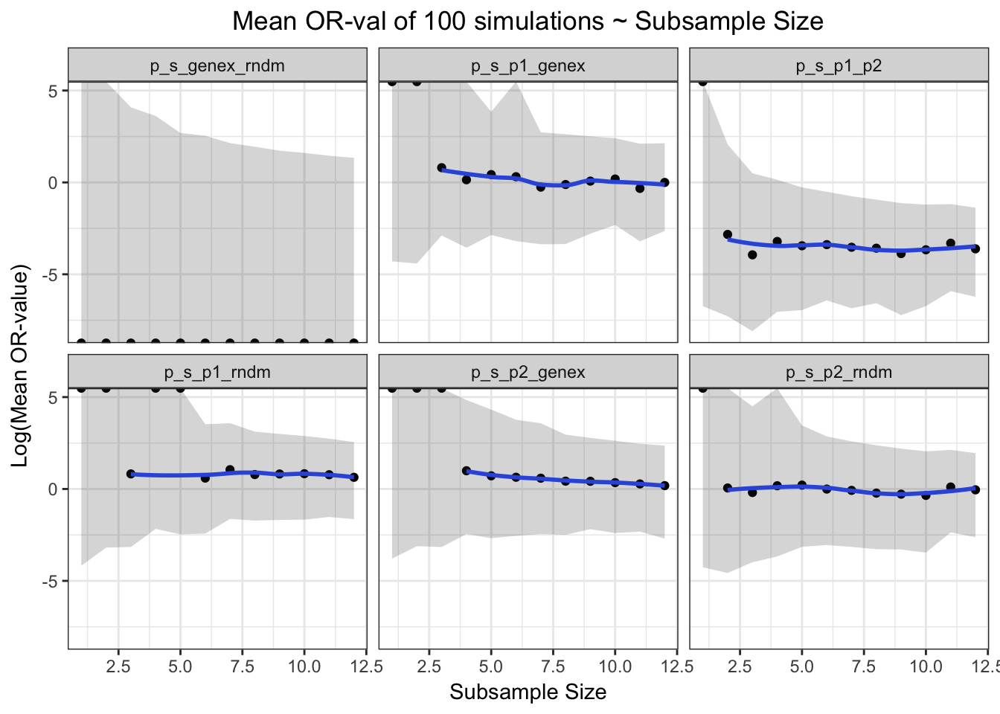
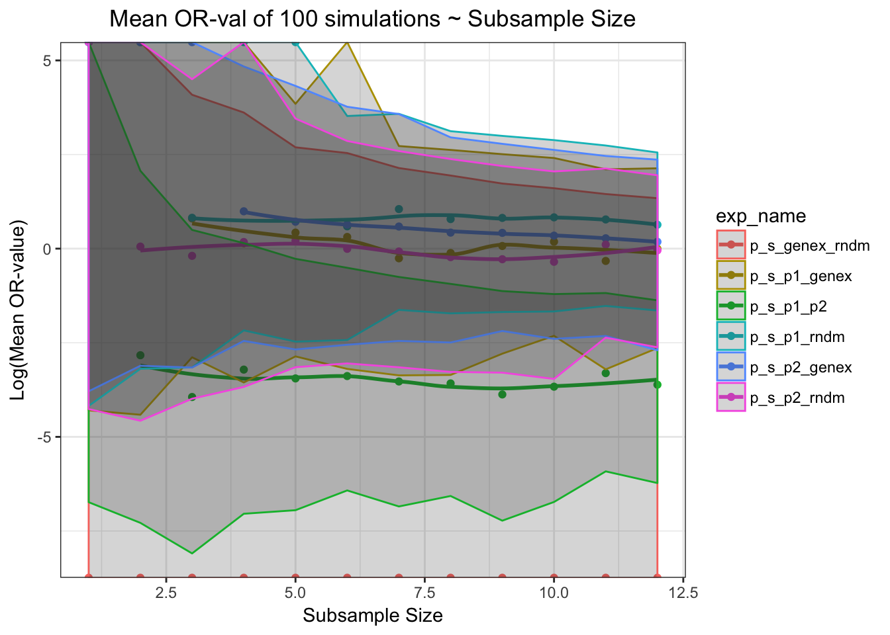
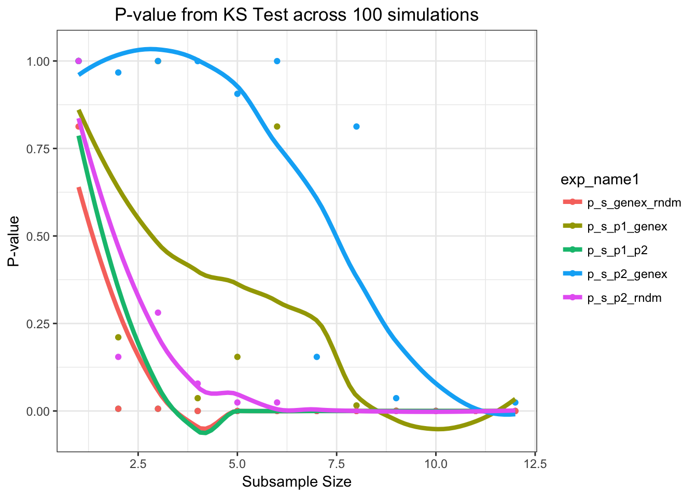

Last updated: 2018-08-06
workflowr checks: (Click a bullet for more information) ✖ R Markdown file: uncommitted changes
The R Markdown file has unstaged changes. To know which version of the R Markdown file created these results, you’ll want to first commit it to the Git repo. If you’re still working on the analysis, you can ignore this warning. When you’re finished, you can run wflow_publish to commit the R Markdown file and build the HTML.
✔ Environment: empty
Great job! The global environment was empty. Objects defined in the global environment can affect the analysis in your R Markdown file in unknown ways. For reproduciblity it’s best to always run the code in an empty environment.
✔ Seed:
set.seed(20180708)
The command set.seed(20180708) was run prior to running the code in the R Markdown file. Setting a seed ensures that any results that rely on randomness, e.g. subsampling or permutations, are reproducible.
✔ Session information: recorded
Great job! Recording the operating system, R version, and package versions is critical for reproducibility.
✔ Repository version: f5bdc97
wflow_publish or wflow_git_commit). workflowr only checks the R Markdown file, but you know if there are other scripts or data files that it depends on. Below is the status of the Git repository when the results were generated:
Ignored files:
Ignored: .RData
Ignored: .Rhistory
Ignored: .Rproj.user/
Untracked files:
Untracked: ORvalplot3a.pdf
Untracked: docs/assets/kd_abl_movie_2.mpg
Untracked: testmkdn.Rmd
Unstaged changes:
Modified: analysis/about.Rmd
Modified: analysis/index.Rmd
Modified: analysis/license.Rmd
| File | Version | Author | Date | Message |
|---|---|---|---|---|
| Rmd | be0a07e | haiderinam | 2018-08-06 | cleaned up the index page |
| html | be0a07e | haiderinam | 2018-08-06 | cleaned up the index page |
| html | ce0ba9a | haiderinam | 2018-07-08 | Build site. |
| Rmd | 13bfe58 | haiderinam | 2018-07-08 | Removed warning messages from code |
| html | 13bfe58 | haiderinam | 2018-07-08 | Removed warning messages from code |
| html | c659c89 | haiderinam | 2018-07-08 | wflow_git_commit(all = TRUE) |
| Rmd | dbeb3a4 | haiderinam | 2018-07-08 | wflow_git_commit(all = TRUE) |
| html | a87321b | haiderinam | 2018-07-08 | Build site. |
| html | 6388f5d | haiderinam | 2018-07-08 | Build site. |
| Rmd | eeb9ac4 | haiderinam | 2018-07-08 | wflow_git_commit(all = TRUE) |
| html | eeb9ac4 | haiderinam | 2018-07-08 | wflow_git_commit(all = TRUE) |
| html | e37fd6a | haiderinam | 2018-07-08 | Build site. |
| Rmd | 2cf442f | haiderinam | 2018-07-08 | Start workflowr project. |
Source: add github source here
alldata=read.csv("data/All_Data_V2.csv",sep=",",header=T,stringsAsFactors=F)alldata=read.csv("data/All_Data_V2.csv",sep=",",header=T,stringsAsFactors=F)
#Sorting by whether user wants to search by specific mutations or the general format overall
if(mtn=='N') {
Positive_Ctrl1=as.numeric(!grepl("NaN",do.call("$",list(alldata,nameposctrl1)),ignore.case = TRUE))
Positive_Ctrl2=as.numeric(!grepl("NaN",do.call("$",list(alldata,nameposctrl2)),ignore.case = TRUE))
} else {
Positive_Ctrl1=as.numeric(grepl(nameposctrl1mt,do.call("$",list(alldata,nameposctrl1)),ignore.case = TRUE))
Positive_Ctrl2=as.numeric(grepl(nameposctrl2mt,do.call("$",list(alldata,nameposctrl2)),ignore.case = TRUE))
}
genex=as.numeric(!grepl(paste(c("NaN","0"), collapse = "|"),do.call("$",list(alldata,namegene)))) #Searching for 'NaN' or '0' in desired gene. A positive hit returns 0 and vise versa.
alldata_comp=cbind(alldata[,c(1,2)],Positive_Ctrl1,Positive_Ctrl2,genex) #Data frame with all the data compiled. I add in random array to this later
genex_replication_prop=sum(genex)/length(genex) #Calculating Replication Proportion
#Creating Random Array (Negative Control)
rndmarray=rbinom(length(Positive_Ctrl1),1,genex_replication_prop) #change alldata #Decided to just call random array in the for-loop
alldata_comp=cbind(alldata_comp,rndmarray) #Adding in random array to compiled gene data
all_genex =alldata_comp[alldata_comp$genex!=0,] #These will be used later for sampling
all_not_genex =alldata_comp[alldata_comp$genex==0,]
all_pc1 =alldata_comp[alldata_comp$Positive_Ctrl1!=0,]
all_not_pc1 =alldata_comp[alldata_comp$Positive_Ctrl1==0,]
all_pc2 =alldata_comp[alldata_comp$Positive_Ctrl2!=0,]
all_not_pc2 =alldata_comp[alldata_comp$Positive_Ctrl2==0,]
all_rndm =alldata_comp[alldata_comp$rndmarray!=0,]
all_not_rndm =alldata_comp[alldata_comp$rndmarray==0,]
#max subsample size is whichever integer is the minimum of: number of genex in sample vs. number of NOTgenex or PC1 or PC2 in sample*genexreplication proportion. For example we had 165 PC1s, therefore 340-175=165 PC1s in our data. Since we want to sample 7.35% positive hits and 92.65% negative hits, a sample containing too many positive hits can impose an upper bound on our subsampling size.
maxsubsamplesize=min(c(genex_replication_prop*length(alldata_comp$Positive_Ctrl1),floor((length(alldata_comp$Positive_Ctrl1)-sum(alldata_comp$Positive_Ctrl1))*genex_replication_prop),floor((length(alldata_comp$Positive_Ctrl1)-sum(alldata_comp$Positive_Ctrl2))*genex_replication_prop),floor((length(alldata_comp$Positive_Ctrl1)-sum(alldata_comp$genex))*genex_replication_prop)))#Part in the code where exceeding the max limit, i.e. 25, returns an error
if(nsubsamples>maxsubsamplesize){
stop("Desired Subsample Size Exceeds Maxium Subsample Size")
}
#Returns error if max value > 1. Will this ever be a problem?
if(max(alldata_comp$Positive_Ctrl1|alldata_comp$Positive_Ctrl2|alldata_comp$genex)>1){
stop("Data Contains Integers >1. Please use either logicals or characters")
}Current proportion of GeneX = 7.353% Total Number of Samples = 340
Number of Positive Control 1 Hits =175
Number of Positive Control 2 Hits = 95
Number of Gene of Interest Hits =25
The maximum allowed subsample size is 12
Therefore, during simulations, Positive Control 1 will be downsampled from 175 to 12. Positive Control 2 will be downsampled from 95 to 12
contab_maker<- function(gene1,gene2,arrayname) {
gene1_gene2_nn=nrow(arrayname[gene1==0 & gene2==0,]) #N N
gene1_gene2_ny=nrow(arrayname[gene1==0 & gene2!=0,]) #N Y
gene1_gene2_yn=nrow(arrayname[gene1!=0 & gene2==0,]) #Y N
gene1_gene2_yy=nrow(arrayname[gene1!=0 & gene2!=0,]) #Y Y
con_tab_gene1_gene2=rbind(c(gene1_gene2_nn,gene1_gene2_ny),c(gene1_gene2_yn,gene1_gene2_yy))
con_tab_gene1_gene2
}
#Contingency Tables:
con_tab_pctrl1_genex=contab_maker(alldata_comp$Positive_Ctrl1,alldata_comp$genex,alldata_comp)
con_tab_pctrl2_genex=contab_maker(alldata_comp$Positive_Ctrl2,alldata_comp$genex,alldata_comp)
con_tab_pctrl1_pctrl2=contab_maker(alldata_comp$Positive_Ctrl1,alldata_comp$Positive_Ctrl2,alldata_comp)
con_tab_pctrl1_rndmarray=contab_maker(alldata_comp$Positive_Ctrl1,alldata_comp$rndmarray,alldata_comp)
con_tab_pctrl2_rndmarray=contab_maker(alldata_comp$Positive_Ctrl2,alldata_comp$rndmarray,alldata_comp)
#Fisher's Exact Test
p_p1_genex=fisher.test(con_tab_pctrl1_genex)
p_p2_genex=fisher.test(con_tab_pctrl2_genex)
p_p1_p2=fisher.test(con_tab_pctrl1_pctrl2)
p_p1_rndm=fisher.test(con_tab_pctrl1_rndmarray)
p_p2_rndm=fisher.test(con_tab_pctrl2_rndmarray)# There are three Loops here. These loop through sumsample size, simulation Number, and experiment number.
# Experiment number: There are 6 experiments. This is because there are 6 possible combinations to combinations of fisher's test for 4 samples (4C2=6)
#Need to modify so that nsubsamples can be a range (like 10:100) rather than a number (like 100)
nexperiments=6 #to make nexperiments a variable, alldatasamplepvals will need to be defined differently
simresults<-matrix(nrow=nsims*nsubsamples*nexperiments,ncol=9)
ct=1
for (subsamplenumber in 1:nsubsamples){
simresults[c(ct:((ct+(nsims*nexperiments))-1)),2]=subsamplenumber #Subsample Number: This updates the next n rows with the subsample number that the loop is on. n is calculated by number of experiments * number of simulations
subsamplenumbernegativehits=round(subsamplenumber/(genex_replication_prop))-subsamplenumber #This determines the number of non-hits for the sample
for (simnumber in 1:nsims){
alldata_comp$rndmarray=rbinom(length(Positive_Ctrl1),1,genex_replication_prop) #Creates random array. Note: we're updating random array at each simulation within each subsample size.
simresults[c(ct:((ct+nexperiments)-1)),3]=simnumber #Simulation Number. This updates the next 6 rows with the simulation number that the loop is on.
sample_genex =all_genex[sample(length(all_genex$genex),subsamplenumber,replace=F,prob=NULL),]
sample_not_genex =all_not_genex[sample(length(all_not_genex$genex),subsamplenumbernegativehits,replace=F,prob=NULL),]
sample_pc1 =all_pc1[sample(length(all_pc1$Positive_Ctrl1),subsamplenumber,replace=F,prob=NULL),]
sample_not_pc1 =all_not_pc1[sample(length(all_not_pc1$Positive_Ctrl1),subsamplenumbernegativehits,replace=F,prob=NULL),]
sample_pc2 =all_pc2[sample(length(all_pc2$Positive_Ctrl2),subsamplenumber,replace=F,prob=NULL),]
sample_not_pc2 =all_not_pc2[sample(length(all_not_pc2$Positive_Ctrl2),subsamplenumbernegativehits,replace=F,prob=NULL),]
sample_rndm =all_rndm[sample(length(all_rndm$rndmarray),subsamplenumber,replace=F,prob=NULL),]
sample_not_rndm =all_not_rndm[sample(length(all_not_rndm$rndmarray),subsamplenumbernegativehits,replace=F,prob=NULL),]
#Combining n (subsample number) hits and m (subsamplenegativenumber) non-hits
sample_genex_comb =rbind(sample_genex,sample_not_genex) #Dunno if this is the right way to do it
sample_pc1_comb =rbind(sample_pc1,sample_not_pc1)
sample_pc2_comb =rbind(sample_pc2,sample_not_pc2)
sample_rndm_comb =rbind(sample_rndm,sample_not_rndm)
alldata_comp_sample<-as.data.frame(cbind(sample_pc1_comb,sample_pc2_comb,sample_genex_comb,sample_rndm_comb)) #Creating array with samples so that contab_maker can use them
#contingency tables
con_tab_sample_pctrl1_genex=contab_maker(sample_pc1_comb$Positive_Ctrl1,sample_pc1_comb$genex,sample_pc1_comb) #Double check to see if this is the right way to do it
con_tab_sample_pctrl2_genex=contab_maker(sample_pc2_comb$Positive_Ctrl2,sample_pc2_comb$genex,sample_pc2_comb)
con_tab_sample_pctrl1_pctrl2=contab_maker(sample_pc1_comb$Positive_Ctrl1,sample_pc1_comb$Positive_Ctrl2,sample_pc1_comb) #note how sampling pc1 vs pc2 and then finding pc2 vs pc1 has drastically different p-values. Add code that looks at which of the samples has a smaller size and then chooses to sample for 7% of that first
con_tab_sample_pctrl1_pctrl2=contab_maker(sample_pc2_comb$Positive_Ctrl2,sample_pc2_comb$Positive_Ctrl1,sample_pc2_comb)
con_tab_sample_pctrl1_rndmarray=contab_maker(sample_pc1_comb$Positive_Ctrl1,sample_pc1_comb$rndmarray,sample_pc1_comb)
con_tab_sample_pctrl2_rndmarray=contab_maker(sample_pc2_comb$Positive_Ctrl2,sample_pc2_comb$rndmarray,sample_pc2_comb)
con_tab_sample_genex_rndmarray=contab_maker(sample_genex_comb$genex,sample_genex_comb$rndmarray,sample_genex_comb)
#Fishers exact test
p_s_p1_genex=fisher.test(con_tab_sample_pctrl1_genex,conf.int = 50) #p_s_ stands p-value, sample. Can name these better in the future
p_s_p2_genex=fisher.test(con_tab_sample_pctrl2_genex,conf.int = 50) #Could check if pc1_genex and genex_pc1 give the same p-value just to verify our test
p_s_p1_p2=fisher.test(con_tab_sample_pctrl1_pctrl2,conf.int = 50)
p_s_p1_rndm=fisher.test(con_tab_sample_pctrl1_rndmarray,conf.int = 50)
p_s_p2_rndm=fisher.test(con_tab_sample_pctrl2_rndmarray,conf.int = 50)
p_s_genex_rndm=fisher.test(con_tab_sample_genex_rndmarray,conf.int = 50)
#Creating df that has all the simulation data so far. This will be used by the simresults df later.
alldatasamplepvals<-as.data.frame(cbind(p_s_p1_genex$p.value,p_s_p2_genex$p.value,p_s_p1_p2$p.value,p_s_p1_rndm$p.value,p_s_p2_rndm$p.value,p_s_genex_rndm$p.value))
colnames(alldatasamplepvals)=c("p_s_p1_genex","p_s_p2_genex","p_s_p1_p2","p_s_p1_rndm","p_s_p2_rndm","p_s_genex_rndm")
alldatasampleORvals<-as.data.frame(cbind(p_s_p1_genex$estimate,p_s_p2_genex$estimate,p_s_p1_p2$estimate,p_s_p1_rndm$estimate,p_s_p2_rndm$estimate,p_s_genex_rndm$estimate))
colnames(alldatasampleORvals)=c("p_s_p1_genex","p_s_p2_genex","p_s_p1_p2","p_s_p1_rndm","p_s_p2_rndm","p_s_genex_rndm")
alldatasampleCIub<-as.data.frame(cbind(p_s_p1_genex$conf.int[2],p_s_p2_genex$conf.int[2],p_s_p1_p2$conf.int[2],p_s_p1_rndm$conf.int[2],p_s_p2_rndm$conf.int[2],p_s_genex_rndm$conf.int[2]))
colnames(alldatasampleCIub)=c("p_s_p1_genex","p_s_p2_genex","p_s_p1_p2","p_s_p1_rndm","p_s_p2_rndm","p_s_genex_rndm")
alldatasampleCIlb<-as.data.frame(cbind(p_s_p1_genex$conf.int[1],p_s_p2_genex$conf.int[1],p_s_p1_p2$conf.int[1],p_s_p1_rndm$conf.int[1],p_s_p2_rndm$conf.int[1],p_s_genex_rndm$conf.int[1]))
colnames(alldatasampleCIlb)=c("p_s_p1_genex","p_s_p2_genex","p_s_p1_p2","p_s_p1_rndm","p_s_p2_rndm","p_s_genex_rndm")
for (expnumber in 1:nexperiments) {
simresults[ct,1]=ct #Total Count
simresults[ct,4]=expnumber #Experiment Number
simresults[ct,5]=colnames(alldatasamplepvals[expnumber]) #Experiment Name
simresults[ct,6]=alldatasamplepvals[1,expnumber] #Experiment P-value. Trying to convert it into numerics
simresults[ct,7]=as.numeric(alldatasampleORvals[1,expnumber]) #Experiment OR-value
simresults[ct,8]=as.numeric(alldatasampleCIub[1,expnumber]) #Experiment 95% Upper Confidence Interval. Can be changed to other CI
simresults[ct,9]=as.numeric(alldatasampleCIlb[1,expnumber]) #Experiment 95% Lower Confidence Interval. Can be changed to other CI
ct=ct+1
}
}
}
| Version | Author | Date |
|---|---|---|
| be0a07e | haiderinam | 2018-08-06 |

| Version | Author | Date |
|---|---|---|
| be0a07e | haiderinam | 2018-08-06 |

| Version | Author | Date |
|---|---|---|
| be0a07e | haiderinam | 2018-08-06 |

| Version | Author | Date |
|---|---|---|
| be0a07e | haiderinam | 2018-08-06 |
`geom_smooth()` using method = 'loess'Warning: Removed 23 rows containing non-finite values (stat_smooth).
| Version | Author | Date |
|---|---|---|
| be0a07e | haiderinam | 2018-08-06 |

| Version | Author | Date |
|---|---|---|
| be0a07e | haiderinam | 2018-08-06 |
Add an ab-line to the p-value plot from the ks-test to show your chosen criteria for p-values. Label this point of significance?
sessionInfo()R version 3.4.1 (2017-06-30)
Platform: x86_64-apple-darwin15.6.0 (64-bit)
Running under: macOS High Sierra 10.13.6
Matrix products: default
BLAS: /Library/Frameworks/R.framework/Versions/3.4/Resources/lib/libRblas.0.dylib
LAPACK: /Library/Frameworks/R.framework/Versions/3.4/Resources/lib/libRlapack.dylib
locale:
[1] en_US.UTF-8/en_US.UTF-8/en_US.UTF-8/C/en_US.UTF-8/en_US.UTF-8
attached base packages:
[1] stats graphics grDevices utils datasets methods base
other attached packages:
[1] bindrcpp_0.2.2 dplyr_0.7.5 ggplot2_2.2.1
loaded via a namespace (and not attached):
[1] Rcpp_0.12.17 bindr_0.1.1 knitr_1.20
[4] whisker_0.3-2 magrittr_1.5 workflowr_1.0.1
[7] tidyselect_0.2.4 munsell_0.5.0 colorspace_1.3-2
[10] R6_2.2.2 rlang_0.2.1 stringr_1.3.1
[13] plyr_1.8.4 tools_3.4.1 grid_3.4.1
[16] gtable_0.2.0 R.oo_1.22.0 git2r_0.21.0
[19] htmltools_0.3.6 assertthat_0.2.0 yaml_2.1.19
[22] lazyeval_0.2.1 rprojroot_1.3-2 digest_0.6.15
[25] tibble_1.4.2 purrr_0.2.5 R.utils_2.6.0
[28] glue_1.2.0 evaluate_0.10.1 rmarkdown_1.10
[31] labeling_0.3 stringi_1.2.3 pillar_1.2.3
[34] compiler_3.4.1 scales_0.5.0 backports_1.1.2
[37] R.methodsS3_1.7.1 pkgconfig_2.0.1 This reproducible R Markdown analysis was created with workflowr 1.0.1